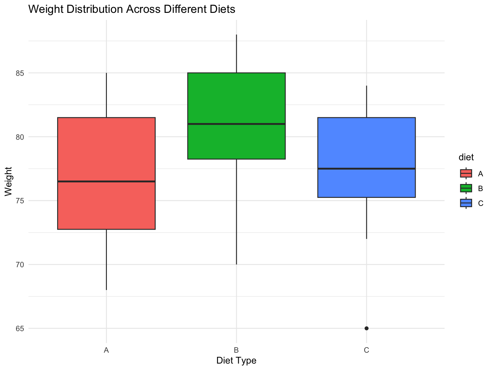

# Load required packages
library(tidyverse)
library(broom)
library(rstatix) Friedman Test Analysis
Friedman Test Analysis
Friedman’s test is a non-parametric statistical test used to detect differences in treatments across multiple test attempts. It is often used when the assumptions of ANOVA are not met, particularly the assumption of normality. The test is applicable for repeated measures, or matched groups, making it useful for situations where the same subjects are subjected to different treatments.
Friedman’s test ranks the data points within each block (or subject) separately, and then analyzes these ranks to see if the mean ranks differ between the groups and conditions. If the test shows significant differences, this suggests that at least one of the treatments differs from the others. Because it is non-parametric, it does not assume the normal distribution of data, which makes it robust for skewed or ordinal data.
Hypotheses
H₀ (Null Hypothesis): There are no significant differences in weight outcomes between the three diets
H₁ (Alternative Hypothesis): There are significant differences in weight outcomes between at least two diets
# Create the dataset
Diet_A = c(75, 68, 80, 72, 85, 70, 82, 78, 75, 83)
Diet_B = c(82, 70, 85, 78, 88, 75, 85, 80, 79, 87)
Diet_C = c(78, 65, 82, 75, 84, 72, 80, 76, 77, 84)
data <- tibble(
subjid = rep(1:10, 3),
diet = rep(c("A", "B", "C"), each = 10),
weight = c(Diet_A, Diet_B, Diet_C)
)Base R {stats}
To run a Friedman’s test in R you can use the {stats} package. This will return the chi-squared test statistic and p-value.
# Perform Friedman test
friedman_test <- friedman.test(weight ~ diet | subjid, data = data)
friedman_test
Friedman rank sum test
data: weight and diet and subjid
Friedman chi-squared = 15.2, df = 2, p-value = 0.0005005To get these values easily into a data.frame you can use the tidy() function from {broom}.
tidy(friedman_test)# A tibble: 1 × 4
statistic p.value parameter method
<dbl> <dbl> <dbl> <chr>
1 15.2 0.000500 2 Friedman rank sum test{rstatix}
Alternatively, you can use the {rstatix} package. While these packages give the same results, the {rstatix} results come as a tibble we can easily use.
test <- data %>%
friedman_test(weight ~ diet | subjid)
test# A tibble: 1 × 6
.y. n statistic df p method
* <chr> <int> <dbl> <dbl> <dbl> <chr>
1 weight 10 15.2 2 0.000500 Friedman test# Create boxplot
ggplot(data, aes(x = diet, y = weight, fill = diet)) +
geom_boxplot() +
theme_minimal() +
labs(title = "Weight Distribution Across Different Diets",
x = "Diet Type",
y = "Weight") 
Conclusion
Based on the analysis:
- Statistical Test Results:
- The Friedman test yielded a p-value of 5.0045143^{-4}
[If p < 0.05, we reject the null hypothesis
If p > 0.05, we fail to reject the null hypothesis]
- Visual Analysis:
From the boxplot, Diet B shows the highest median weight
Diet B also appears to have the highest overall weight distribution
Diet A and Diet C show similar distributions but lower than Diet B
- Interpretation:
If the goal is weight gain: Diet B appears most effective
If the goal is weight maintenance: Diet A or C might be more suitable
However, individual responses vary, as shown by the overlapping distributions
Reference
Cite all sources and references used in the analysis.
Session Info
─ Session info ───────────────────────────────────────────────────────────────
setting value
version R version 4.4.2 (2024-10-31)
os Ubuntu 24.04.2 LTS
system x86_64, linux-gnu
ui X11
language (EN)
collate C.UTF-8
ctype C.UTF-8
tz UTC
date 2025-05-13
pandoc 3.6.3 @ /opt/quarto/bin/tools/ (via rmarkdown)
─ Packages ───────────────────────────────────────────────────────────────────
! package * version date (UTC) lib source
P abind 1.4-8 2024-09-12 [?] RSPM (R 4.4.0)
askpass 1.2.1 2024-10-04 [1] RSPM (R 4.4.0)
P backports 1.5.0 2024-05-23 [?] RSPM (R 4.4.0)
base64enc 0.1-3 2015-07-28 [1] RSPM (R 4.4.0)
bit 4.5.0 2024-09-20 [1] RSPM (R 4.4.0)
bit64 4.5.2 2024-09-22 [1] RSPM (R 4.4.0)
blob 1.2.4 2023-03-17 [1] RSPM (R 4.4.0)
boot 1.3-31 2024-08-28 [2] CRAN (R 4.4.2)
P broom * 1.0.7 2024-09-26 [?] RSPM (R 4.4.0)
bslib 0.8.0 2024-07-29 [1] RSPM (R 4.4.0)
cachem 1.1.0 2024-05-16 [1] RSPM (R 4.4.0)
callr 3.7.6 2024-03-25 [1] RSPM (R 4.4.0)
P car 3.1-3 2024-09-27 [?] RSPM (R 4.4.0)
P carData 3.0-5 2022-01-06 [?] RSPM (R 4.4.0)
cellranger 1.1.0 2016-07-27 [1] RSPM (R 4.4.0)
P cli 3.6.3 2024-06-21 [?] RSPM (R 4.4.0)
clipr 0.8.0 2022-02-22 [1] RSPM (R 4.4.0)
P colorspace 2.1-1 2024-07-26 [?] RSPM (R 4.4.0)
conflicted 1.2.0 2023-02-01 [1] RSPM (R 4.4.0)
corrplot 0.94 2024-08-17 [1] RSPM (R 4.4.0)
cowplot 1.1.3 2024-01-22 [1] RSPM (R 4.4.0)
cpp11 0.5.0 2024-08-27 [1] RSPM (R 4.4.0)
crayon 1.5.3 2024-06-20 [1] RSPM (R 4.4.0)
curl 5.2.3 2024-09-20 [1] RSPM (R 4.4.0)
data.table 1.16.0 2024-08-27 [1] RSPM (R 4.4.0)
DBI 1.2.3 2024-06-02 [1] RSPM (R 4.4.0)
dbplyr 2.5.0 2024-03-19 [1] RSPM (R 4.4.0)
Deriv 4.1.6 2024-09-13 [1] RSPM (R 4.4.0)
P digest 0.6.37 2024-08-19 [?] RSPM (R 4.4.0)
doBy 4.6.24 2024-10-07 [1] RSPM (R 4.4.0)
P dplyr * 1.1.4 2023-11-17 [?] RSPM (R 4.4.0)
dtplyr 1.3.1 2023-03-22 [1] RSPM (R 4.4.0)
P evaluate 1.0.0 2024-09-17 [?] RSPM (R 4.4.0)
P fansi 1.0.6 2023-12-08 [?] RSPM (R 4.4.0)
P farver 2.1.2 2024-05-13 [?] RSPM (R 4.4.0)
P fastmap 1.2.0 2024-05-15 [?] RSPM (R 4.4.0)
fontawesome 0.5.2 2023-08-19 [1] RSPM (R 4.4.0)
P forcats * 1.0.0 2023-01-29 [?] RSPM (R 4.4.0)
P Formula 1.2-5 2023-02-24 [?] RSPM (R 4.4.0)
fs 1.6.4 2024-04-25 [1] RSPM (R 4.4.0)
gargle 1.5.2 2023-07-20 [1] RSPM (R 4.4.0)
P generics 0.1.3 2022-07-05 [?] RSPM (R 4.4.0)
P ggplot2 * 3.5.1 2024-04-23 [?] RSPM (R 4.4.0)
P glue 1.8.0 2024-09-30 [?] RSPM (R 4.4.0)
googledrive 2.1.1 2023-06-11 [1] RSPM (R 4.4.0)
googlesheets4 1.1.1 2023-06-11 [1] RSPM (R 4.4.0)
P gtable 0.3.5 2024-04-22 [?] RSPM (R 4.4.0)
haven 2.5.4 2023-11-30 [1] RSPM (R 4.4.0)
highr 0.11 2024-05-26 [1] RSPM (R 4.4.0)
P hms 1.1.3 2023-03-21 [?] RSPM (R 4.4.0)
P htmltools 0.5.8.1 2024-04-04 [?] RSPM (R 4.4.0)
httr 1.4.7 2023-08-15 [1] RSPM (R 4.4.0)
ids 1.0.1 2017-05-31 [1] RSPM (R 4.4.0)
isoband 0.2.7 2022-12-20 [1] RSPM (R 4.4.0)
jquerylib 0.1.4 2021-04-26 [1] RSPM (R 4.4.0)
P jsonlite 1.8.9 2024-09-20 [?] RSPM (R 4.4.0)
P knitr 1.48 2024-07-07 [?] RSPM (R 4.4.0)
P labeling 0.4.3 2023-08-29 [?] RSPM (R 4.4.0)
lattice 0.22-6 2024-03-20 [2] CRAN (R 4.4.2)
P lifecycle 1.0.4 2023-11-07 [?] RSPM (R 4.4.0)
lme4 1.1-35.5 2024-07-03 [1] RSPM (R 4.4.0)
P lubridate * 1.9.3 2023-09-27 [?] RSPM (R 4.4.0)
P magrittr 2.0.3 2022-03-30 [?] RSPM (R 4.4.0)
MASS 7.3-61 2024-06-13 [2] CRAN (R 4.4.2)
Matrix 1.7-1 2024-10-18 [2] CRAN (R 4.4.2)
MatrixModels 0.5-3 2023-11-06 [1] RSPM (R 4.4.0)
memoise 2.0.1 2021-11-26 [1] RSPM (R 4.4.0)
mgcv 1.9-1 2023-12-21 [2] CRAN (R 4.4.2)
microbenchmark 1.5.0 2024-09-04 [1] RSPM (R 4.4.0)
mime 0.12 2021-09-28 [1] RSPM (R 4.4.0)
minqa 1.2.8 2024-08-17 [1] RSPM (R 4.4.0)
modelr 0.1.11 2023-03-22 [1] RSPM (R 4.4.0)
P munsell 0.5.1 2024-04-01 [?] RSPM (R 4.4.0)
nlme 3.1-166 2024-08-14 [2] CRAN (R 4.4.2)
nloptr 2.1.1 2024-06-25 [1] RSPM (R 4.4.0)
nnet 7.3-19 2023-05-03 [2] CRAN (R 4.4.2)
numDeriv 2016.8-1.1 2019-06-06 [1] RSPM (R 4.4.0)
openssl 2.2.2 2024-09-20 [1] RSPM (R 4.4.0)
pbkrtest 0.5.3 2024-06-26 [1] RSPM (R 4.4.0)
P pillar 1.9.0 2023-03-22 [?] RSPM (R 4.4.0)
P pkgconfig 2.0.3 2019-09-22 [?] RSPM (R 4.4.0)
prettyunits 1.2.0 2023-09-24 [1] RSPM (R 4.4.0)
processx 3.8.4 2024-03-16 [1] RSPM (R 4.4.0)
progress 1.2.3 2023-12-06 [1] RSPM (R 4.4.0)
ps 1.8.0 2024-09-12 [1] RSPM (R 4.4.0)
P purrr * 1.0.2 2023-08-10 [?] RSPM (R 4.4.0)
quantreg 5.98 2024-05-26 [1] RSPM (R 4.4.0)
P R6 2.5.1 2021-08-19 [?] RSPM (R 4.4.0)
ragg 1.3.3 2024-09-11 [1] RSPM (R 4.4.0)
rappdirs 0.3.3 2021-01-31 [1] RSPM (R 4.4.0)
RColorBrewer 1.1-3 2022-04-03 [1] RSPM (R 4.4.0)
Rcpp 1.0.13 2024-07-17 [1] RSPM (R 4.4.0)
RcppEigen 0.3.4.0.2 2024-08-24 [1] RSPM (R 4.4.0)
P readr * 2.1.5 2024-01-10 [?] RSPM (R 4.4.0)
readxl 1.4.3 2023-07-06 [1] RSPM (R 4.4.0)
rematch 2.0.0 2023-08-30 [1] RSPM (R 4.4.0)
rematch2 2.1.2 2020-05-01 [1] RSPM (R 4.4.0)
reprex 2.1.1 2024-07-06 [1] RSPM (R 4.4.0)
P rlang 1.1.4 2024-06-04 [?] RSPM (R 4.4.0)
P rmarkdown 2.28 2024-08-17 [?] RSPM (R 4.4.0)
P rstatix * 0.7.2 2023-02-01 [?] RSPM (R 4.4.0)
rstudioapi 0.16.0 2024-03-24 [1] RSPM (R 4.4.0)
rvest 1.0.4 2024-02-12 [1] RSPM (R 4.4.0)
sass 0.4.9 2024-03-15 [1] RSPM (R 4.4.0)
P scales 1.3.0 2023-11-28 [?] RSPM (R 4.4.0)
selectr 0.4-2 2019-11-20 [1] RSPM (R 4.4.0)
SparseM 1.84-2 2024-07-17 [1] RSPM (R 4.4.0)
P stringi 1.8.4 2024-05-06 [?] RSPM (R 4.4.0)
P stringr * 1.5.1 2023-11-14 [?] RSPM (R 4.4.0)
survival 3.7-0 2024-06-05 [2] CRAN (R 4.4.2)
sys 3.4.3 2024-10-04 [1] RSPM (R 4.4.0)
systemfonts 1.1.0 2024-05-15 [1] RSPM (R 4.4.0)
textshaping 0.4.0 2024-05-24 [1] RSPM (R 4.4.0)
P tibble * 3.2.1 2023-03-20 [?] RSPM (R 4.4.0)
P tidyr * 1.3.1 2024-01-24 [?] RSPM (R 4.4.0)
P tidyselect 1.2.1 2024-03-11 [?] RSPM (R 4.4.0)
P tidyverse * 2.0.0 2023-02-22 [?] RSPM (R 4.4.0)
P timechange 0.3.0 2024-01-18 [?] RSPM (R 4.4.0)
tinytex 0.53 2024-09-15 [1] RSPM (R 4.4.0)
P tzdb 0.4.0 2023-05-12 [?] RSPM (R 4.4.0)
P utf8 1.2.4 2023-10-22 [?] RSPM (R 4.4.0)
uuid 1.2-1 2024-07-29 [1] RSPM (R 4.4.0)
P vctrs 0.6.5 2023-12-01 [?] RSPM (R 4.4.0)
viridisLite 0.4.2 2023-05-02 [1] RSPM (R 4.4.0)
vroom 1.6.5 2023-12-05 [1] RSPM (R 4.4.0)
P withr 3.0.1 2024-07-31 [?] RSPM (R 4.4.0)
P xfun 0.48 2024-10-03 [?] RSPM (R 4.4.0)
xml2 1.3.6 2023-12-04 [1] RSPM (R 4.4.0)
P yaml 2.3.10 2024-07-26 [?] RSPM (R 4.4.0)
[1] /home/runner/work/CAMIS/CAMIS/renv/library/linux-ubuntu-noble/R-4.4/x86_64-pc-linux-gnu
[2] /opt/R/4.4.2/lib/R/library
P ── Loaded and on-disk path mismatch.
──────────────────────────────────────────────────────────────────────────────